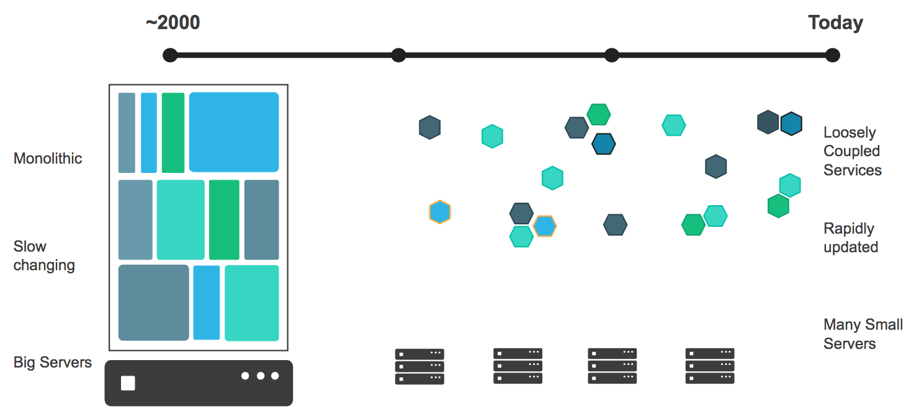
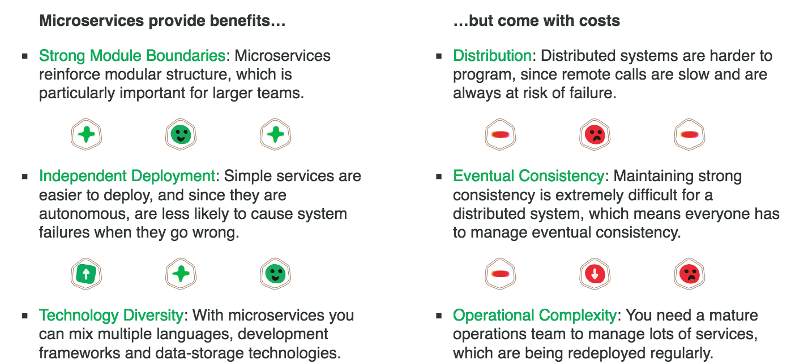

Your browser doesn't support the features required by impress.js, so you
are presented with a simplified version of this presentation.
For the best experience please use the latest Chrome, Safari, or Firefox 10.

Le plan
- Le Docker Meetup
- Un peu d'Histoire
- Les concepts fondateurs
- Une adoption unanime
- Les paradigmes promus par Docker
Le Docker Meetup : Le besoin
- Adoption de Docker en Calédonie en expansion
- Amène à repenser tout le SI
- Au carrefour de plusieurs métiers
- Nécessite de nouvelles approches et compétences
- Un changement difficile à faire seul
Le Docker Meetup : Une solution
- Proposer un espace d'échange sur Docker
- Partager des expériences
- Apprendre ensemble
- Mutualiser les efforts et les moyens
- Trouver des solutions communes
Le Docker Meetup : Concrètement
- Un évènement officiel Docker Inc.
- Plusieurs évènments dans l'année
- Plusieurs formats possibles : Conférence, ateliers,..
- Un premier point d'entrée : http://www.meetup.com/fr-FR/Docker-Noumea/
- Merci aux speakers
- Merci à la CCI
- Soyez speaker aux prochains évènements
Le plan
- Le Docker Meetup
- Un peu d'Histoire
- Les concepts fondateurs
- Une adoption unanime
- Les paradigmes promus par Docker
Un peu d'Histoire : le synopsis
- Bio Solomon Hykes
- Origine du projet
- La start-up qui aurait du être française
- Choix du Go
- Evolution éclair de l'adoption
- Un soupçon de stats

Un peu d'Histoire : l'ère dotCloud
- 2006 - Solomon Hykes diplômé de l'Epitech
- 2008 - création de dotCloud avec Sébastien Pahl
- Aucun finacement trouvé parmi les business angels français
- Le 1er virage : un changement géographique
- 2010 - Incubation au sein de Y Combinator
- Les start-up de Y Combinator comme early adopters
- "Go, c'est un peu la Suisse des langages modernes"
- 2011 - implantation dans la Silicon Valley
- Demandes récurrentes d'accès à des briques légo du socle dotCloud

Un peu d'Histoire : l'ère Docker
- Le 2ème virage : un changement stratégique
- Modularisation des services internes du PaaS doCloud
- 2013 - ouverture de Docker à l'open source
- Mars 2013 - lancement de Docker Hub
- Septembre 2013 - Red Hat l'intègre à OpenShift
- Fin 2014 - Adoption par Microsoft, Google, Amazon, IBM
- Septembre 2015 - 40% des usages en production
- Novembre 2015 - 1.2 milliards de pulls
- Février 2016 - 2 milliards de pulls / 7000 par min
- Democratisation des PaaS et Caas privés

Le plan
- Un peu d'Histoire
- Les concepts fondateurs
- Une adoption unanime
- Les paradigmes promus par Docker
Les concepts fondateurs
- L'allégorie du container
- Le slogan devOPS
- Le container linux LXC
- En résumé
Concepts fondateurs : L'allégorie du container

Concepts fondateurs : L'allégorie du container

Concepts fondateurs : L'allégorie du container

Concepts fondateurs : L'allégorie du container

Concepts fondateurs : L'allégorie du container

Concepts fondateurs : L'allégorie du container

Concepts fondateurs : L'allégorie du container
Double abstraction du container

Concepts fondateurs : L'allégorie du container
Double abstraction du container Docker

Concepts fondateurs : Le slogan devOPS
"Build, Ship, Run, Any App Anywhere"


Concepts fondateurs : Le slogan devOPS
"Build, Ship, Run, Any App Anywhere"

Concepts fondateurs : Le container linux LXC
Container vs VM

- Une technologie Linux-only
- Le kernel linux de l'hôte partagé avec les containers
- Un container = un processus linux isolé sur un hôte linux
Concepts fondateurs : En résumé
- Un mode de virtualisation léger et rapide
- Initialement basé sur les containers linux LXC
- Une execution isolée
- Avec maitrise des flux (port, montage disque, réseau)
- Un mécanisme de gestion de configuration
- Avec des scripts d'installation versionnés
- Un outil de déploiement sur étagère simple et intégré
- Avec un dépôt central des images à installer
Le plan
- Le Docker Meetup
- Un peu d'Histoire
- Les concepts fondateurs
- Une adoption unanime
- Les paradigmes promus par Docker
Une adoption unanime : l'ecosystème partenaire

Une adoption unanime : Docker en chiffres
Evolution du nombre de pulls sur le Docker Hub

Une adoption unanime : Docker en chiffres
Les bénéfices quantifiés

Une adoption unanime : Les leviers d'adoption
Les raisons stratégiques d'adoption par les entreprises
- Evolution des applications vers l'architecture Microservices
- Réduction du Time To Marker
- Optimisation des ressources et du nombre de VMs
- Amélioration de la gestion de l'environement opérationnel
- Alignement DevOps
- Portabilité applicative
- Passage au cloud
- Modernisation d'applications lecacy
Le plan
- Le Docker Meetup
- Un peu d'Histoire
- Les concepts fondateurs
- Une adoption unanime
- Les paradigmes promus par Docker
Les paradigmes promus par Docker
- Les Microservices / Architecture WOA
- Polyglot Programming / Polyglot Persistence
- devOPS
- Infrastructure as code
- Immutable infrastructure
- Continuous Deployment
- Pets vs Cows
- Phoenix servers
- Self healing
- Dynamic partionning
- Scale cube
Les paradigmes promus : Les Microservices
Une définition de James Lewis et Martin Fowler
In short, the microservice architectural style is an approach to developing a single application as a suite of small services, each running in its own process and communicating with lightweight mechanisms, often an HTTP resource API. These services are built around business capabilities and independently deployable by fully automated deployment machinery. There is a bare minimum of centralized management of these services, which may be written in different programming languages and use different data storage technologies.

Les paradigmes promus : Les Microservices
Martin Fowler, "Common characteristics of this new architectural style"
- Componentization via Services
- Organized around Business Capabilities
- Products not Projects
- Smart endpoints and dumb pipes
- Decentralized Governance
- Decentralized Data Management
- Infrastructure Automation
- Design for failure
- Evolutionary Design
Les paradigmes promus : Les Microservices
Un changement d'architecture qui implique de s'adapter

- Vers une augmentation croissante du nombre de services
- du nombre de déploiements
- et donc de la charge d'activité sur les OPS
Les paradigmes promus : Les Microservices
Les compromis à trouver

Les paradigmes promus : Les Microservices
Les défits à relever
- Comment gérer l'explosion du nombre de services, de déploiements, de versions ?
- Comment faciliter les nombreux déploiements ?
- Quelle startégie de versionning applicatif ?
- Comment adminsitrer pléthore de technologies et bases de données ?
Les paradigmes promus : L'esprit Polyglotte
Polyglot Persistence and Programming : The right tool for the job

- Un langage de programmation adapté à chaque situation
- Un type de base approprié à l'usage de la donnée